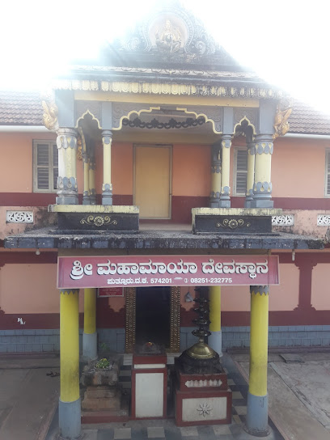

Shree Mahamaya Temple Puttur
Lovely and calm temple. It also has Lord Ganapathi's sannidhi. The first abhisheka is performed at 7 am and alankara pooja is completed by 12.30 pm. The mahapooja of Goddess Mahamaya is at 8 pm after which the temple is closed. Adjoining the temple is a fully covered vehicle parking area.
